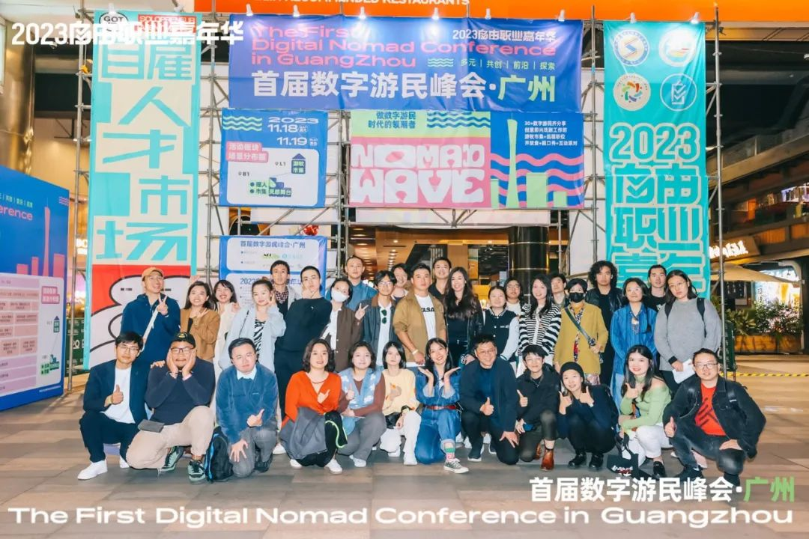

故事的开始，发生于NCC共居共创社区。通过近三个月的筹备，近百位共建者的加入，我们一起在北上广三城落地了几乎场场爆满的活动，在大家的共同努力下，这件”难且正确的事“被赋予了更多的意义。
数字游民超越了传统企业和体制的工作模式，在迅速变化的环境中展现了一种创新的生活方式。这场数字游民大会，正是一次证明——我们并非孤立无援，我们通过社区精神和价值观紧密相连。
在此次大会中，每位参与者都是共同记忆的塑造者。
我们看到了社区的价值和共创的力量、我们通过社区产生了链接和信任。
本次大会是对数字游民文化的展现和庆祝——不仅仅是共享知识和经验，更共同展现了一种生活态度：勇敢探索、不断创新、彼此协作。
我们也相信，有更多人看到了“数字游民”这个群体潜藏的能力、可能性，因此，我们在想：如何让更多的人了解数字游民及其背后代表的生活方式甚至更多东西？
在跟媒体朋友沟通后，我们都认为，或许，一份「洞察报告」是很好的切入口。
同时，本洞察报告会是数字游民大会第二届非常重要的前哨，会在活动中作为非常重要的内容进行展出。


产出一份具有媒体传播价值，能让更多人了解数字游民群。国内《数字游民全景式调研报告》将全方位展示：
🤔当前
国内数字游民的现状
包括个人属性、旅居地倾向，甚至是婚恋观等……
🏡 当前
国内数字游民社区的属性
包括活动类型、社交规模、选取因素等……
👀 未来
国内数字游民的发展展望
包括城市选择、未来发展等……
此次洞察报告，我们分为三个阶段：
无论你是数字游民，还是向往成为数字游民，或者犹豫自己是不是数字游民，我们都诚挚邀请你，填写问卷以及转发给感兴趣的朋友！
每一位填写问卷的朋友们，不仅能抢先一步收到报告，同时也有机会获得第二届数字游民大会的隐藏福利!
那么加入联合宣发社区吧！
联合宣发社区合作细项：
👇 NCC小助手二维码
联合宣发社区
NCC
NOMAD WAVE 2024